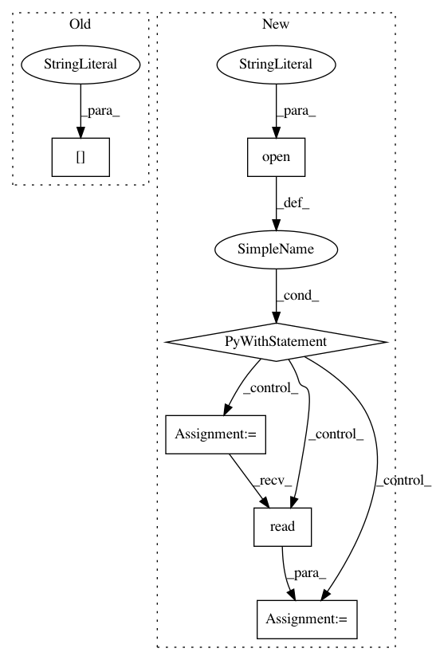

dcf2b18671089d792ad25e3063b0829587fe08f4,kmapper/kmapper.py,KeplerMapper,visualize,#KeplerMapper#Any#Any#Any#Any#Any#Any#Any#Any#Any#Any#Any#,311
Before Change
module_root = os.path.join(os.path.dirname(__file__), "templates")
env = Environment(loader=FileSystemLoader(module_root))
env.globals["STATIC_PREFIX"] = os.path.join(module_root, "static")
// Render the Jinja template, filling fields as appropriate
template = env.get_template("base.html").render(
After Change
// Find the absolute module path and the static files
js_path = os.path.join(os.path.dirname(__file__), "static", "kmapper.js")
with open(js_path, "r") as myfile:
js_text = myfile.read()
css_path = os.path.join(os.path.dirname(__file__), "static", "style.css")
with open(css_path, "r") as myfile:
css_text = myfile.read()
In pattern: SUPERPATTERN
Frequency: 4
Non-data size: 6
Instances
Project Name: MLWave/kepler-mapper
Commit Name: dcf2b18671089d792ad25e3063b0829587fe08f4
Time: 2018-01-11
Author: mangham@gmail.com
File Name: kmapper/kmapper.py
Class Name: KeplerMapper
Method Name: visualize
Project Name: dit/dit
Commit Name: 03c767ba99ab2e46e97dc5c27a133fa2c3830aaa
Time: 2015-03-14
Author: ryangregoryjames@gmail.com
File Name: setup.py
Class Name:
Method Name: main
Project Name: ilastik/ilastik
Commit Name: fe3ba731e7deb1317457a8c2015fd18688b59b5f
Time: 2020-02-14
Author: mnovikov.work@gmail.com
File Name: ilastik/applets/networkClassification/nnClassGui.py
Class Name: NNClassGui
Method Name: add_NN_classifiers
Project Name: MTG/freesound
Commit Name: 99a1522f89b93b12917087ae7ae7d910cf0c2cf1
Time: 2018-07-18
Author: phil.tgun@gmail.com
File Name: sounds/models.py
Class Name: Sound
Method Name: compute_crc